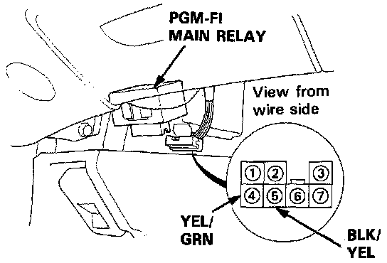

Main Relay (Computer/Fuel System): Testing and Inspection
NOTE: If the car starts and continues to run, the Programmed Fuel Injection (PGM-FI) main relay is OK.PGM-FI Main Relay Location:

1. Remove the PGM-FI main relay.
PGM-FI Main Relay Schematic View:

2. Attach the battery positive terminal to the No. 2 terminal and the battery negative terminal to the No. 1 terminal of the PGM-FI main relay. Then check for continuity between the No. 5 terminal and No. 4 terminal of the PGM-FI main relay.
^ If there is continuity, go on to step 3.
^ If there is no continuity, replace the PGM-FI main relay and retest.
3. Attach the battery positive terminal to the No. 5 terminal and the battery negative terminal to the No. 3 terminal of the PGM-FI main relay. Then check that there is continuity between the No. 7 terminal and No.6 terminal of the PGM-FI main relay.
^ If there is continuity, go on to step 4.
^ If there is no continuity, replace the PGM-FI main relay and retest.
4. Attach the battery positive terminal to the No. 6 terminal and the battery negative terminal to the No. I terminal of the PGM-FI main relay. Then check that there is continuity between the No. 5 terminal and No. 4 terminal of the PGM-FI main relay.
^ If there is continuity, the PGM-FI main relay is OK.
^ If there is no continuity, replace the PGM-FI main relay and retest.